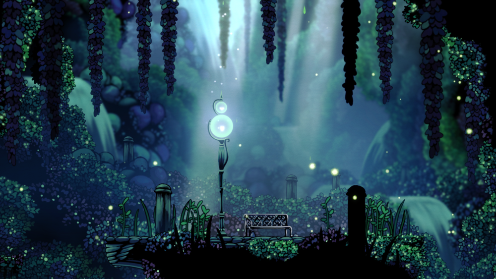
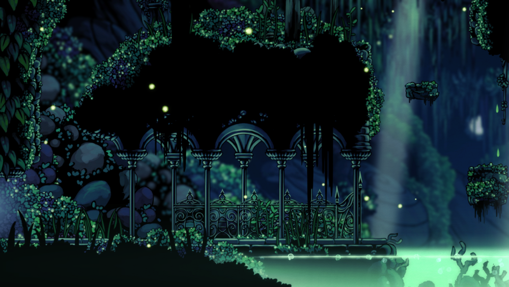
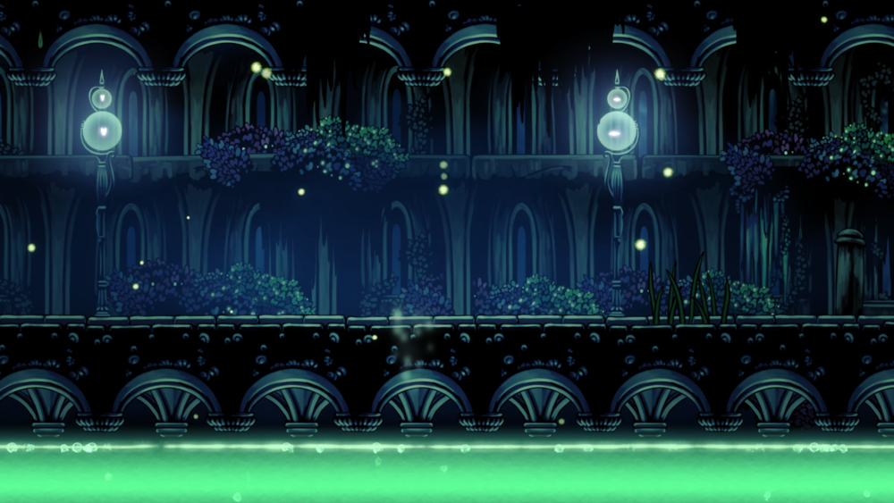
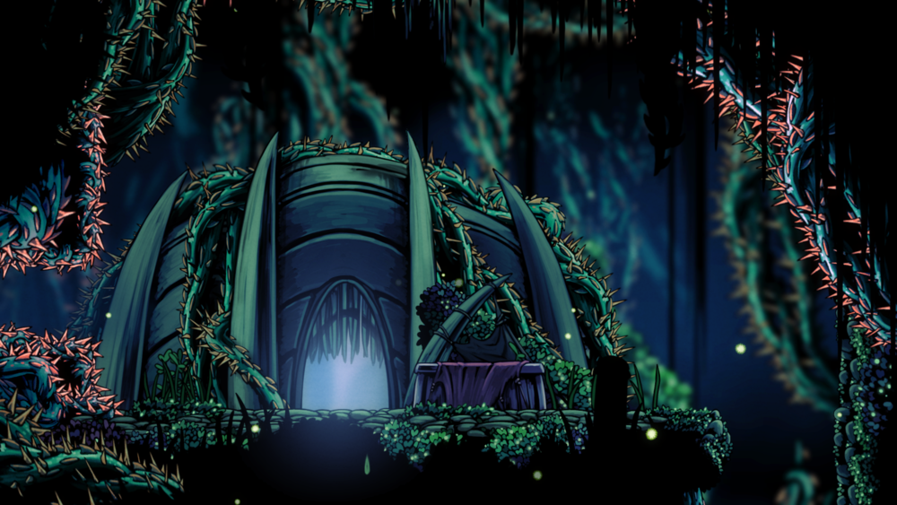
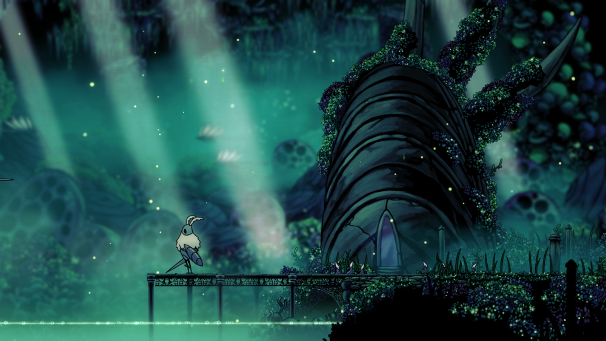
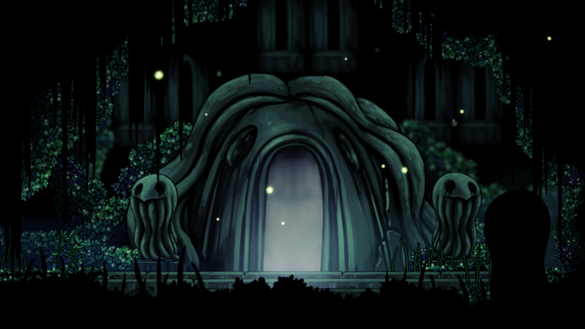

Greenpath's flora and fauna was said to be created by the higher being, Unn. The main inhabitants of the area, the Mosskin Tribe, were also said to created by Unn. Several lore tablets constructed and carved by these bugs can be seen throughout the area. They also built a temple near the lake, where the Higher Being lives, to worship her.
Greenpath
Greenpath is a green region, filled with lush vegetation, mossy surroundings, and lakes filled with acid.
Located below the Howling Cliffs and above the Queen's Gardens. Also located west of the Forgotten Crossroads and the Fog Canyon.
Lore
Inhabitants
- Characters
- Nailmaster Sheo
- The Hunter
- Enemies
- Crawlids
- Durandas
- Durandoos
- Fool Eaters
- Gulkas
- Husks
- Maskflies
- Mosskins
- Obbles
- Squits
- Tiktiks
- Vengeflies
Gallery

Bench near the Forgotten Crossroads

Northeast area

South road

Nailmaster Sheo's hut

Shrine at the Lake of Unn

The Stone Sanctuary